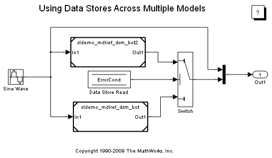
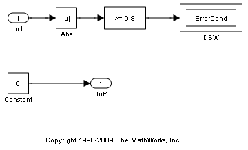
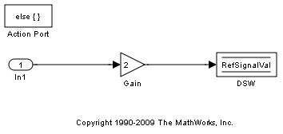
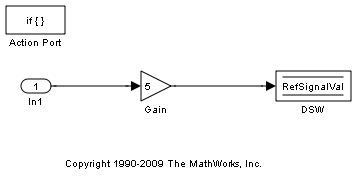
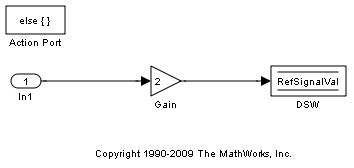
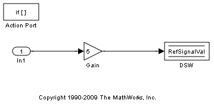
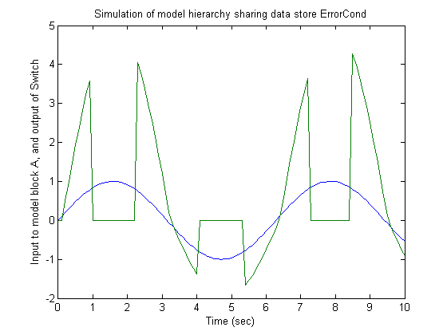
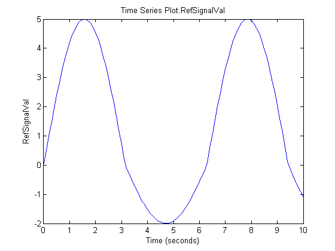

Using Data Stores Across Multiple Models
This demo explains how to use and log local data stores. It also shows how to define, use and log global data stores to share global data among referenced models.
Contents
Open the Demo Models
Open the demo models. The top model sldemo_mdlref_dsm references models sldemo_mdlref_dsm_bot and sldemo_mdlref_dsm_bot2. Logging of data stores is turned on for sldemo_mdlref_dsm on the Data Import/Export pane of the Configuration Parameters dialog.
Reference model sldemo_mdlref_dsm_bot amplifies the incoming signal by 5 if the signal is positive or by 2 if the signal is negative and writes the value of this signal to local data store RefSignalVal. This local data store is configured to log all written values to the workspace after simulation. The logging parameters for this local data store are controlled by the Logging tab of the block parameters dialog.
Reference model sldemo_mdlref_dsm_bot2 sets the value of a global boolean data store named ErrorCond to true if the value of its incoming signal is outside of the range (-0.8, 0.8). The top model also monitors the data store ErrorCond and switches between the outputs of the two referenced models, depending on the value of that data store.
   
  Define a Global Data Store Using a Simulink® Signal Object
To specify to Simulink that the top model and both of the referenced models use the same memory for the Data Store named ErrorCond in each model, create an instance of a Simulink.Signal object named ErrorCond in the base workspace. Since this object is visible to each model, its scope encompasses the individual models and implies that there is one global data store of that name that is shared among the models. Note that none of the three models contains a Data Store Memory block with a data store name of ErrorCond. If any model contained such a block, that block would define a data store local to the model, which would shadow the global data store.
Since the object ErrorCond defines a global data store, it must explicitly define the DataType, Complexity, Dimensions, and SamplingMode properties to non-inherited settings. SampleTime and StorageClass may be left as their inherited values, or explicitly set.
The demo includes a MAT-file named sldemo_mdlref_dsm_data.mat that contains the Simulink.Signal object ErrorCond. The preload function of the model sldemo_mdlref_dsm loads this MAT-file causing the object to be loaded in the base workspace. You can view this object by selecting the base workspace in the Model Explorer (matlab:daexplr). You can also create this object from the MATLAB® command prompt. The following commands define the object used in this demo:
ErrorCond = Simulink.Signal; ErrorCond.Description = 'Use to signal that subsystem output is invalid'; ErrorCond.DataType = 'boolean'; ErrorCond.Complexity = 'real'; ErrorCond.Dimensions = 1; ErrorCond.SamplingMode='Sample based'; ErrorCond.SampleTime = 0.1; ErrorCond.LoggingInfo.DataLogging = true;
Logging a Global Data Store
To log all the values written to the global data store, set the DataLogging property of the LoggingInfo property of the Simulink.Signal object. The LoggingInfo property also allows specification of other logging parameters such as decimation and maximum points.
Simulink.LoggingInfo (handle)
DataLogging: 1
NameMode: 0
LoggingName: ''
DecimateData: 0
Decimation: 2
LimitDataPoints: 0
MaxPoints: 5000Simulate the Model
Now you can simulate sldemo_mdlref_dsm to see the output. The reference model sldemo_mdlref_dsm_bot writes to the data store ErrorCond while the top model sldemo_mdlref_dsm reads from the data store. The blue line represents the input to sldemo_mdlref_dsm_bot; the green line represents the output of the Switch block. Note that the output switches when the magnitude of the input signal falls outside of the range.
View Logged Results
Both the global data store ErrorCond and the local data store RefSignalVal are configured to log all written values after simulation. These logged results are stored in the base workspace in the dsmout variable.
dsmout =
Simulink.SimulationData.Dataset
Package: Simulink.SimulationData
Characteristics:
Name: 'dsmout'
Total Elements: 2
Elements:
1: 'ErrorCond'
2: 'RefSignalVal'
Use getElement to access elements by index or
find to access elements by name.
To access the data stored for the local data store, use the find function to get the correct data store element based on the name RefSignalVal.
>> dsmout.find('RefSignalVal')
ans =
Simulink.SimulationData.DataStoreMemory
Package: Simulink.SimulationData
Properties:
Name: 'RefSignalVal'
BlockPath: [1x1 Simulink.SimulationData.BlockPath]
Scope: 'local'
DSMWriterBlockPaths: [1x2 Simulink.SimulationData.BlockPath]
DSMWriters: [101x1 uint32]
Values: [1x1 timeseries]
Data is stored in a timeseries within the Values field.
>> plot(dsmout.find('RefSignalVal').Values); To determine which block wrote to the data store at a given time, use the DSMWriters property. This array contains a list of indices into the DSMWriterBlockPaths array. For example, the block path of the Data Store Write block that wrote the 5th value to the data store can be obtained as follows:
>> dsm = dsmout.find('RefSignalVal');
>> dsm.DSMWriterBlockPaths(dsm.DSMWriters(5))
ans =
Simulink.SimulationData.BlockPath
Package: Simulink.SimulationData
Block Path:
'sldemo_mdlref_dsm/A'
'sldemo_mdlref_dsm_bot/PositiveSS/DSW'